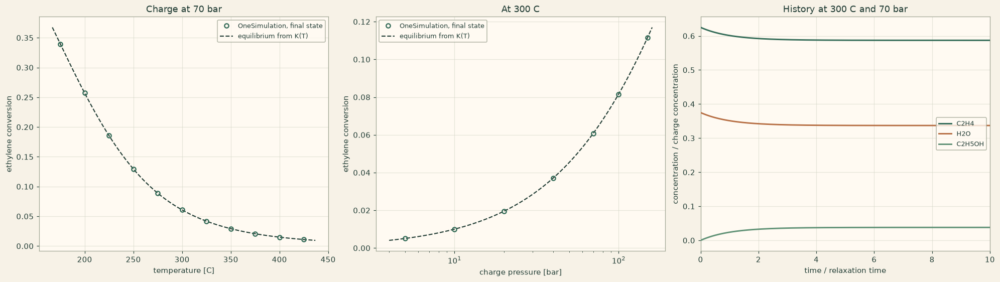

Docs › Examples › Gas-phase equilibrium of ethylene hydration to ethanol
Chemical equilibrium · 0D
Gas-phase equilibrium of ethylene hydration to ethanol
How much ethylene can turn into ethanol over steam at 175 to 425 C and 5 to 150 bar, the trade-off behind the industrial hydration process.
Run locally with OneSimulation. The example downloads are free. Running them requires an activated runtime. The current pilot runs on macOS on Apple Silicon with CPython 3.13. Installation and activation · View pilot plans. Scope of the reference checks.

What it computes
OneSimulation integrates the reversible reaction C2H4 + H2O = C2H5OH in closed isothermal vessels until it comes to rest; the reverse rate is built from the equilibrium constant of the species thermochemistry (NIST data), so the final state is the chemical equilibrium. Seventeen vessels form a temperature sweep at 70 bar and a pressure sweep at 300 C.
What it checks
All final conversions agree with the equilibrium solved independently from the standard Gibbs energy to 1e-8 or better (6.08 % at 300 C and 70 bar, falling from 34.0 % at 175 C to 1.1 % at 425 C, rising from 0.5 % at 5 bar to 11.2 % at 150 bar).
The notebook
The complete notebook, cell by cell. Run it to produce the figures and the comparison printout.
Synthetic ethanol is made by the direct hydration of ethylene over an acid catalyst,
The reaction is exothermic and lowers the mole number, so low temperature and high pressure favour ethanol, while the catalyst needs a high temperature to be fast. The industrial process compromises at about 300 °C and 70 bar with a water-to-ethylene ratio near 0.6.
Here the mixture is charged into a closed, isothermal vessel (0D) and the reversible reaction is integrated until it comes to rest. Only a forward rate constant is declared; OneSimulation builds the reverse rate from the equilibrium constant of the species thermochemistry, so the state the kinetics reaches must be the chemical equilibrium:
Reference. Standard enthalpies of formation, entropies and heat capacities at 298.15 K from the NIST Chemistry WebBook (Linstrom & Mallard, NIST SRD 69). The equilibrium extent \(x\) in the rigid vessel solves \(K_c\,(c_{\mathrm E,0}-x)(c_{\mathrm W,0}-x)=x\); it is computed here independently with a root finder, the procedure of Smith, Van Ness & Abbott, Introduction to Chemical Engineering Thermodynamics, chapter 13.
import numpy as np
from onesim.cad.geometry import LumpedDomain
from onesim.meshing import LumpedMesh
from onesim.numerics import Numerics
from onesim.numerics.discretization import LumpedParameters
from onesim.numerics.time import ClassicalRungeKutta4
from onesim.physics.chemistry import (
ReactionIR,
ReactionKinetics,
ReactionNetworkIR,
SpeciesIR,
)
from onesim.simulation import Problem, Simulation
from onesim.simulation.initial_conditions import InitialValue
from onesim.visualization import plots, theme
from scipy.optimize import brentq
theme.set()Species and reaction
Standard enthalpy of formation [J/mol], standard entropy and heat capacity [J/(mol K)] of each gas. The forward rate constant only sets how fast the vessel comes to rest.
R = 8.314462618
thermo = {
"C2H4": (52.4e3, 219.32, 42.90, {"C": 2, "H": 4}, 4.66e-26),
"H2O": (-241.826e3, 188.835, 33.58, {"H": 2, "O": 1}, 2.99e-26),
"C2H5OH": (-234.95e3, 281.64, 65.21, {"C": 2, "H": 6, "O": 1}, 7.65e-26),
}
rate_constant = 1e-4
network = ReactionNetworkIR(
"ethylene_hydration",
"1",
species=tuple(
SpeciesIR(
name,
0,
mass,
composition=atoms,
thermo={
"model": "constant-cp",
"reference_temperature": 298.15,
"reference_enthalpy": h,
"reference_entropy": s,
"heat_capacity": cp,
},
)
for name, (h, s, cp, atoms, mass) in thermo.items()
),
reactions=(
ReactionIR(
"hydration",
{"C2H4": 1, "H2O": 1},
{"C2H5OH": 1},
{"kind": "constant", "value": rate_constant},
reversible=True,
),
),
strict_balance=True,
)
dH = thermo["C2H5OH"][0] - thermo["C2H4"][0] - thermo["H2O"][0]
dS = thermo["C2H5OH"][1] - thermo["C2H4"][1] - thermo["H2O"][1]
dcp = thermo["C2H5OH"][2] - thermo["C2H4"][2] - thermo["H2O"][2]
K = lambda T: np.exp(
-(dH + dcp * (T - 298.15) - T * (dS + dcp * np.log(T / 298.15))) / (R * T)
)
print(
f"reaction enthalpy {dH / 1e3:.2f} kJ/mol, reaction entropy {dS:.2f} J/(mol K), K(298 K) = {K(298.15):.1f}, K(573 K) = {K(573.15):.2e}"
)Runs
Two studies, each a list of closed vessels: a temperature sweep at a charge pressure of 70 bar, and a pressure sweep at 300 °C, both with 0.6 mol of water per mol of ethylene. Every run lasts 25 relaxation times \(1/\lambda\) with \(\lambda = k\,(c_0 + 1/K_c)\) in 500 classical Runge-Kutta steps.
domain = LumpedDomain()
water_ratio = 0.6
cases = [(T, 70e5) for T in np.linspace(448.15, 698.15, 11)] + [
(573.15, p) for p in (5e5, 10e5, 20e5, 40e5, 100e5, 150e5)
]
models = [
ReactionKinetics(domain=domain.system, network=network, temperature=T)
for T, p in cases
]
total = [p / (R * T) for T, p in cases]
relaxation = [rate_constant * (p / (R * T) + 1e5 / (K(T) * R * T)) for T, p in cases]
runs = [
Simulation(
problem=Problem(
name="ethylene hydration",
geometry=domain,
physics=(model,),
initial_conditions=(
InitialValue(model.concentration("C2H4"), c / (1 + water_ratio)),
InitialValue(
model.concentration("H2O"), c * water_ratio / (1 + water_ratio)
),
InitialValue(model.concentration("C2H5OH"), 0.0),
),
),
mesh=LumpedMesh(domain),
numerics=Numerics(
spatial=LumpedParameters(), time_integrator=ClassicalRungeKutta4()
),
).run(start_time=0.0, end_time=25 / rate, time_step=0.05 / rate)
for model, c, rate in zip(models, total, relaxation)
]Comparison with the equilibrium
The ethylene conversion at the end of each run against the root of the equilibrium condition. At the industrial point only about 6 % of the ethylene can react per pass, which is why the process recycles the unconverted gas.
conversion = np.array(
[
run.field(model.concentration("C2H5OH")).values[0] / (c / (1 + water_ratio))
for run, model, c in zip(runs, models, total)
]
)
equilibrium = lambda T, c: brentq(
lambda x: K(T) * R * T / 1e5 * (1 - x) * (water_ratio - x) * c / (1 + water_ratio)
- x,
0.0,
water_ratio,
)
reference = np.array([equilibrium(T, c) for (T, p), c in zip(cases, total)])
for (T, p), simulated, exact in zip(cases, conversion, reference):
print(
f"T = {T - 273.15:5.1f} C, charge {p / 1e5:5.0f} bar: conversion simulated {simulated:.5f}, equilibrium {exact:.5f}, "
f"difference {abs(simulated - exact):.1e}"
)
final_pressure = [
sum(run.field(model.concentration(name)).values[0] for name in thermo) * R * T
for run, model, (T, p) in zip(runs, models, cases)
]
print(
f"pressure at 300 C and 70 bar charge falls to {final_pressure[5] / 1e5:.1f} bar as two moles become one"
)Figure
Equilibrium conversion over temperature at 70 bar charge pressure and over pressure at 300 °C, and the composition history of the vessel at the industrial operating point.
history = runs[5]
times = history.field(models[5].concentration("C2H4")).times
T_line, p_line = np.linspace(440.0, 710.0, 200), np.geomspace(4e5, 1.6e7, 200)
fig = plots.figure(1, 3, size=(18, 5))
plots.line(
points={
"OneSimulation, final state": (
np.array([T for T, p in cases[:11]]) - 273.15,
conversion[:11],
)
},
reference={
"equilibrium from K(T)": (
T_line - 273.15,
[equilibrium(T, 70e5 / (R * T)) for T in T_line],
)
},
xlabel="temperature [C]",
ylabel="ethylene conversion",
title="Charge at 70 bar",
ax=fig[0],
)
plots.line(
points={
"OneSimulation, final state": (
np.array([p for T, p in cases[11:]] + [70e5]) / 1e5,
np.r_[conversion[11:], conversion[5]],
)
},
reference={
"equilibrium from K(T)": (
p_line / 1e5,
[equilibrium(573.15, p / (R * 573.15)) for p in p_line],
)
},
scale="logx",
xlabel="charge pressure [bar]",
ylabel="ethylene conversion",
title="At 300 C",
legend="upper left",
ax=fig[1],
)
plots.line(
y={
name: (
relaxation[5] * np.asarray(times),
history.field(models[5].concentration(name)).time_series()[1] / total[5],
)
for name in thermo
},
xlabel="time / relaxation time",
xlimits=(0, 10),
ylabel="concentration / charge concentration",
title="History at 300 C and 70 bar",
legend="center right",
ax=fig[2],
)
plots.show()Going further
Raise the water-to-ethylene ratio and watch the conversion per pass grow while the ethanol in the product gets more dilute. Replace the constant heat capacities with NASA polynomials for a wider temperature range, or let the vessel run adiabatically with AdiabaticReaction to see the reaction heat push the equilibrium back.